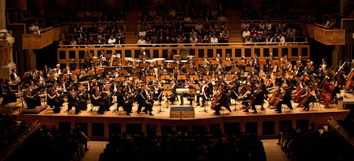

Celebrando a música em todo o mundo
O Dia Internacional da Música é celebrado todos os anos em 1 de outubro. A data foi instituída pelo Conselho Internacional de Música, em 1975, para promover a arte musical em todas as suas formas.
Celebrações
Eventos musicais, concertos ao ar livre e apresentações em escolas são algumas das maneiras pelas quais o Dia Internacional da Música é celebrado em todo o mundo.
